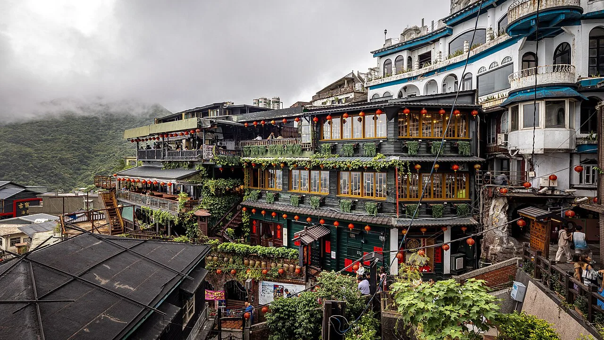
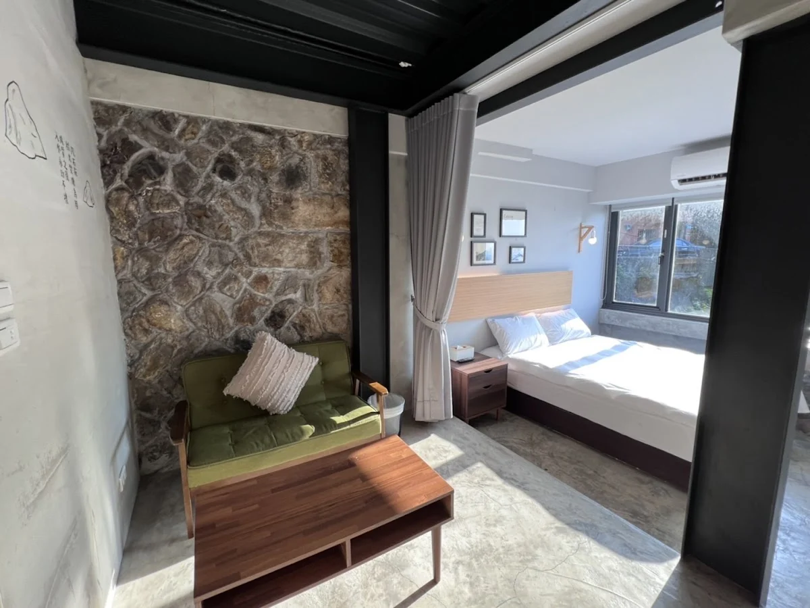
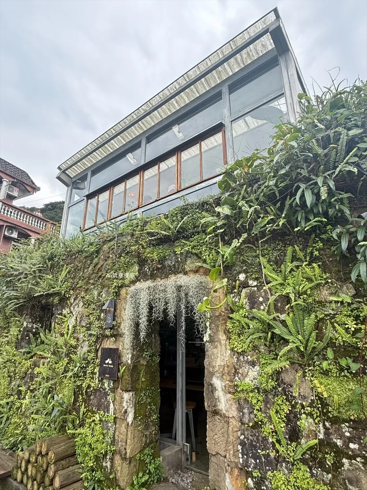
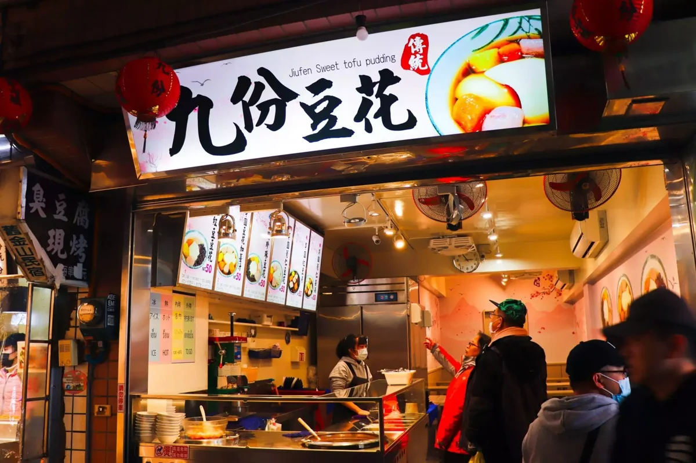
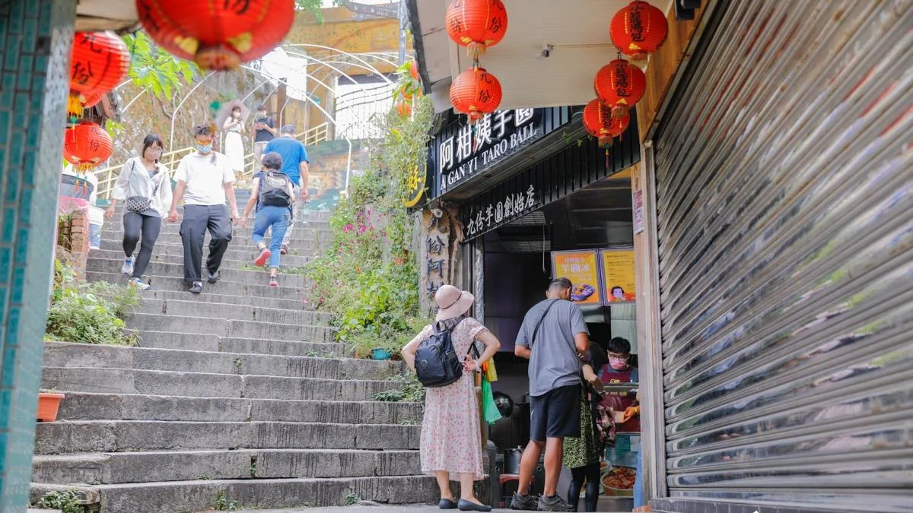
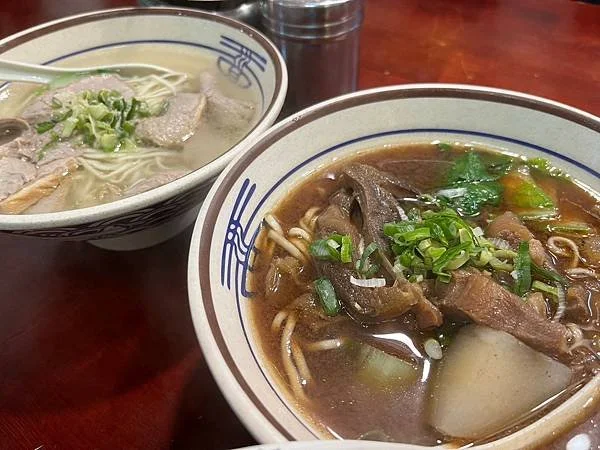
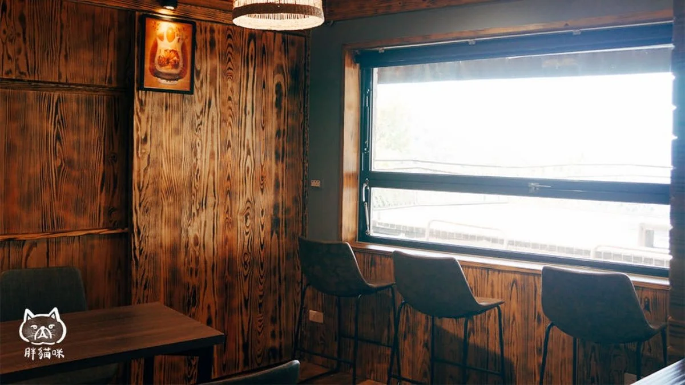
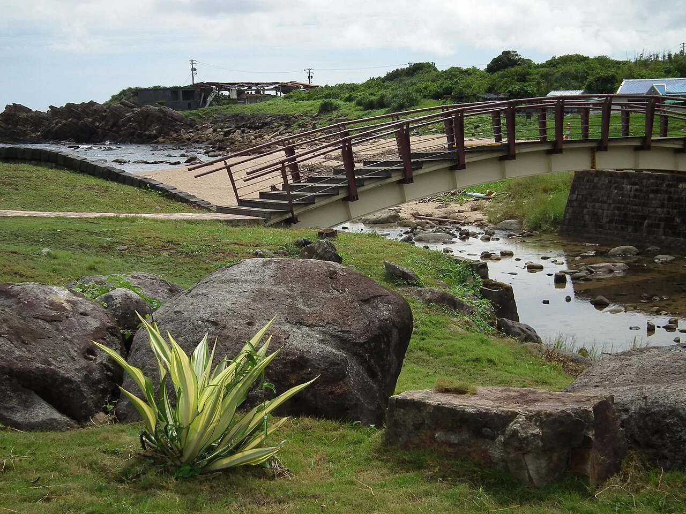

中和大仁街出發
先往新莊用晚餐，再前往九份。出發點以街道標記，未指定門牌。

九份景點參考照 · 非當次旅行實拍依原行程整理：兩晚九份山經、一天老街散步，最後一天沿著海岸走。只有原記錄提供的時間標示鐘點，其餘保留行程順序。
第一天從中和出發，先到新莊吃晚餐，再往東北抵達九份。第二天留在山城散步；第三天往北下山到陰陽海，再沿海岸往東南走向金沙灣；18:00 從東北角出發，直接返回新店安坑。
相對方向示意，位置與距離不按比例；實際導航請使用下方 Google Maps。
星期五 · 中和出發、新莊晚餐、九份入住
先往新莊用晚餐，再前往九份。出發點以街道標記，未指定門牌。
先在常旺海鮮熱炒（新莊店）用晚餐，再出發上山。導航以店名與公園路搜尋，避免公開資料不同門牌造成誤導。
兩晚的落腳處。這是原行程記錄的抵達時間。

星期六 · 早午餐與山城散步
在森林系咖啡館展開今天的行程。

從老街開始，把下午交給小吃與巷弄。
224 新北市瑞芳區永慶里基山街2號。
旅行筆記：薑汁芋圓是目前的最愛，還能做冰的！

把一碗芋圓，留在這趟山城旅行裡。

不補上時間表，保留隨興走走的空白。
以牛肉麵收尾，再回住宿休息。
224新北市瑞芳區崇文里豎崎路9號

兩晚都住九份山經。
星期日 · 早餐、咖啡與海岸
224 新北市瑞芳區崇文里中山巷5號2樓。
沿用原記錄順序；店名不代表當時的造訪時間。
224新北市瑞芳區基山里輕便路61號

從九份山城轉往水湳洞海岸。
原記錄寫作「福隆金沙灣海濱公園」；此頁導航指向貢寮區和美街72號的金沙灣海濱公園。

結束東北角行程後直接回家。18:00 為出發時間；導航以最後一站金沙灣為起點，目的地先標示安坑地區。
九份在山上；陰陽海在水湳洞海岸；金沙灣在更往東南的貢寮海岸。地圖可切換每個地點。
原記錄「福隆金沙灣」以金沙灣海濱公園串接；金沙灣與福隆海水浴場是不同地點。導航需要網路，交通方式請依實際情況選擇。
本頁依提供的過往行程整理；文字為行程摘要，用餐心得與時間依旅行者提供的紀錄呈現。照片為店家與景點參考照，並非本次旅程的個人實拍。每張新增照片均附來源；餐點照片不代表當次點餐。
九份照片：Supanut Arunoprayote，Jiufen Amei Tea House 08.23.jpg，CC BY 4.0。金沙灣照片：lienyuan lee，Jinshawan Waterfront Park，CC BY 3.0。圖片已縮小並轉為 WebP，版面以裁切方式呈現；照片並非當次旅行實拍。
九份豆花地址與薑汁芋圓心得依旅行者補充；阿柑姨「竽圓」以店家通用名稱「芋圓」呈現。店家營業資訊可能變動，重遊時請另行確認。